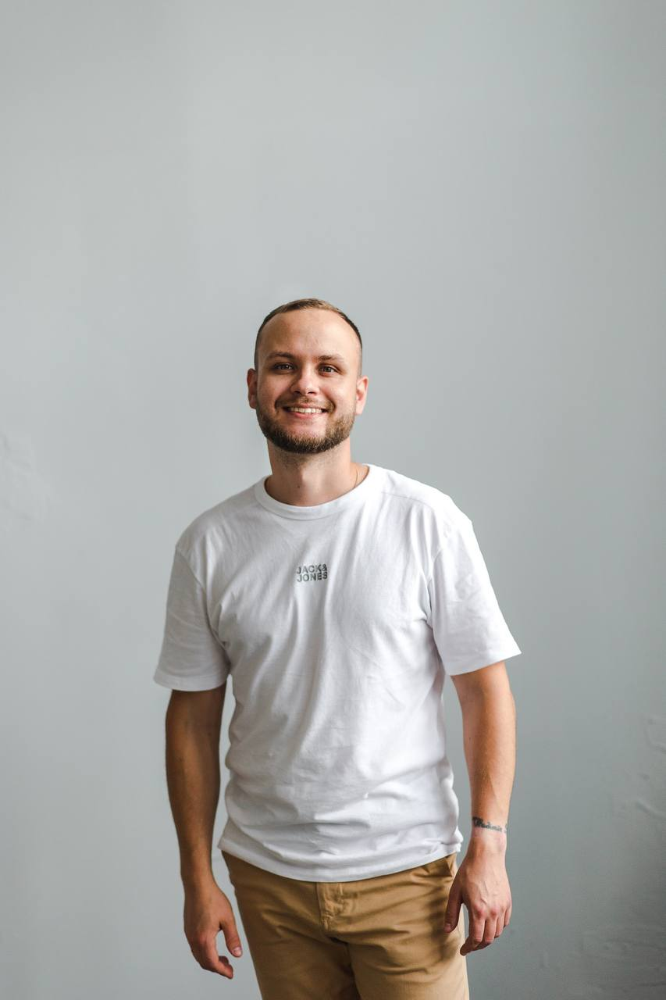

Build. Break. Write it down.
Hi, I'm Anatoli — platform engineer. I write about technology, things I've learned, and the occasional opinion I couldn't keep to myself.
✕
Latest Posts

Anatoli Tsikhamirau
Platform Engineer
I work on the platforms and tools that help engineering teams do their job. Mostly Go, Kubernetes, and cloud infrastructure — the foundation that quietly holds everything else up.